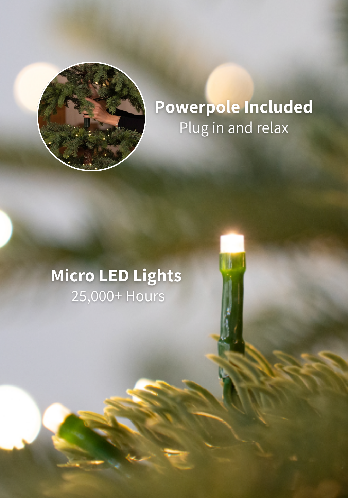

Introducing the Lux Lights

Lux Lights combine refined color, clear illumination, and dependable performance for a polished holiday display.

Lux Lights combine refined color, clear illumination, and dependable performance for a polished holiday display.